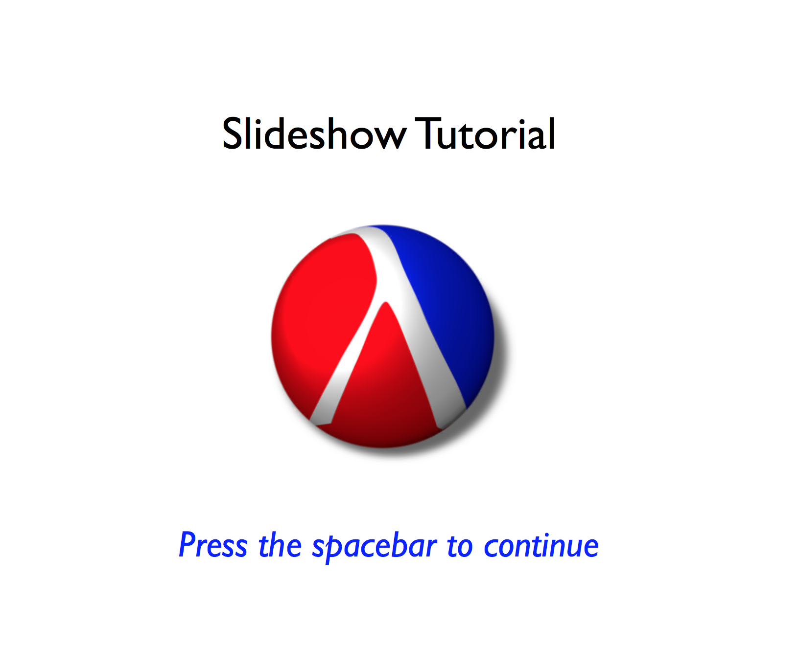
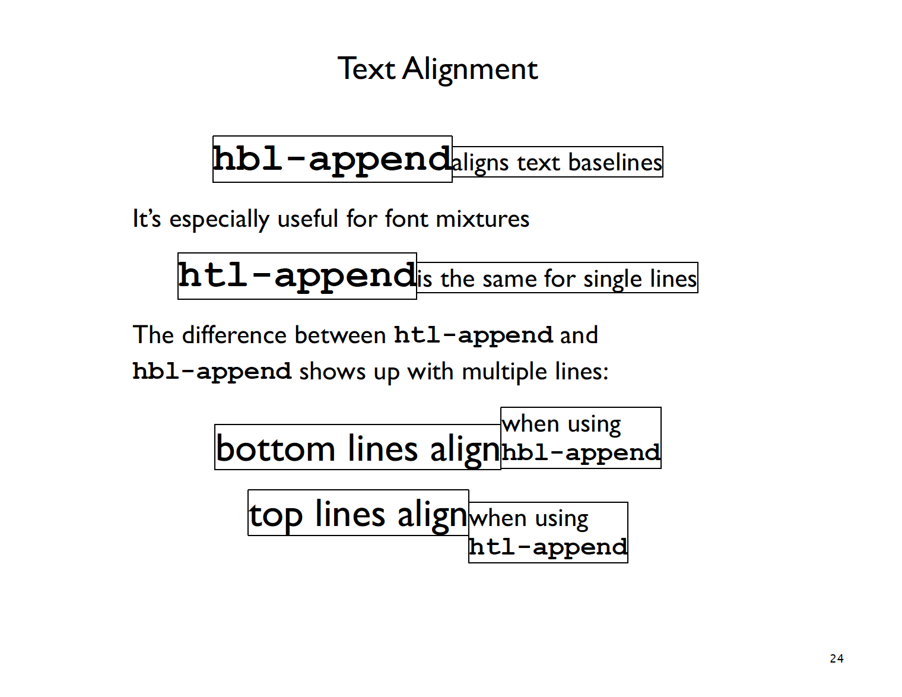
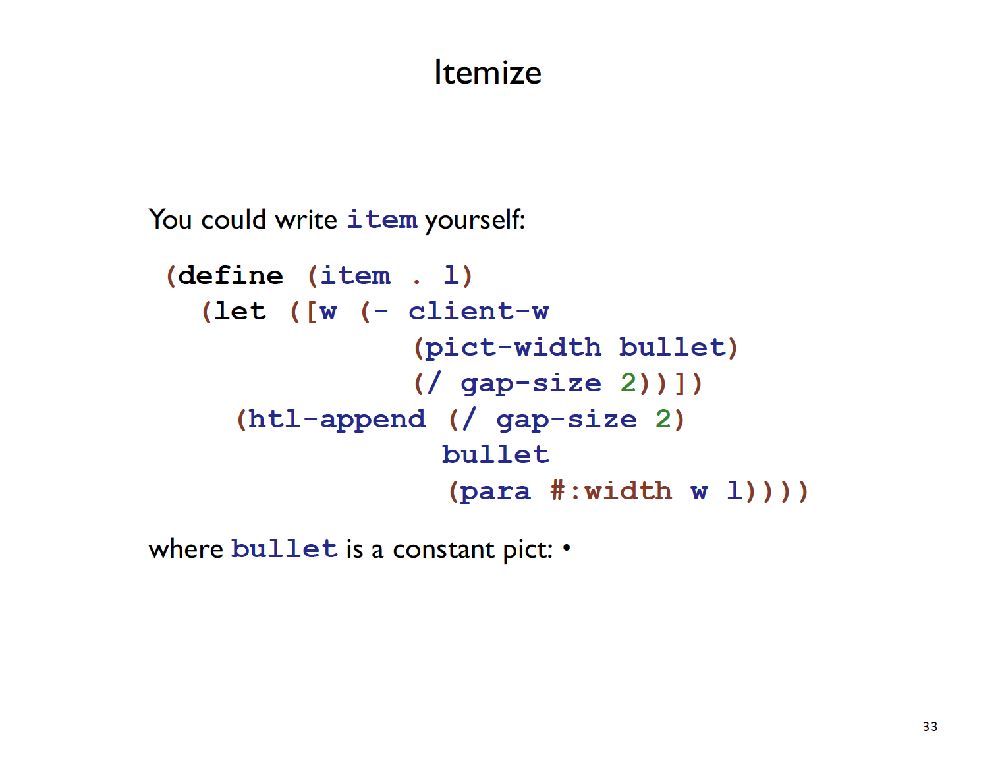

Jun 2, 2018


Lisp，诞生于1958年，世界上第二古老的编程语言，仅次于Fortran。在之后的漫长岁月里，Lisp发生了很多改变，也产生了很多所谓的“方言”，当现在的我们提到Lisp时，我们更多地是指Lisp系的语言。在这些“方言”中，最著名的莫过于Common Lisp和Scheme了。这篇文章要用到的语言叫做Racket，Racket之前叫做PLT Scheme，顾名思义Racket是由Scheme演化而来的，至于PLT的含义已不可考，一般认为是指Programming Language Team。
我对Lisp的兴趣，甚至于说我对整个Programming Language Theory的兴趣，都来自于两件事。 一是我大一大二的时候沉迷于逆向破解，觉得IDA这种软件实在是太神奇了，把要分析的程序丢进去，按一下F5居然就可以将一堆二进制转换成C语言的伪代码，我觉得这一定很困难吧，更不用说现代编译器对代码的各种优化了，这里面一定藏着编程的秘密 :) 第二件事是因为一个叫王垠的人，我觉得程序员里不少人应该都听过他的名字。我是在大三的时候看到他的博客的，那时候的我就像发现了一个宝藏一样，每天都要读几篇他的文章（尽管我已经看了好多遍），看好几次他今天有没有更新博客，甚至连检查电脑连不连网都是用的ping www.yinwang.org，活脱脱一个小迷弟。当然了，很可惜的是，他无法成为我永远的偶像，如果真是那样，那只能说明我的水平停滞不前了，which is 非常不好的，就像他在怎样成为一个天才里说的：
要成为天才，必须要能够打破别人设下的思维圈套。去除自己头脑里的各种权威，是非常重要的事情。你必须首先在心理上把自己放在跟本领域的权威平起平坐的地位，才能有效地对他们的想法做出判断和消化。我喜欢对权威显示出藐视的态度，就是这个原因，这是一种“矫枉过正”的方法。因为他们最开头在我心里还占有很重要的地位，为了把他们轰下去，我最开头是很激烈的藐视。到后来自己的认识因此迅速加深之后，才开始慢慢的理解到他们其中一些想法的启发意义。最后那种激烈的情绪逐渐消亡，他们在我心里也就变成了很普通的人。
不过，我从他的博客里学到的那些珍贵的知识，却是可以使我受益终身的，正如他在理性的力量所里写到的，
这些话有它们自己的地位，它们不属于我，不依赖于我，它们本身就是一种成就。如果有人想用我的话去说服另一个人，他不需要告诉他：“王垠说……” 他只需要告诉他是什么，为什么，就像转述一个定理一样。这就是为什么王垠打倒了很多人心中的权威，而他自己并没有成为新的权威。他说了如此多有重大价值的内容，却经常被一些刚学会 Python 的初学者鄙视。这就是所谓“上善若水” :p
似乎扯得太远了，回到正题，王垠的博客里有好几篇写Lisp的文章，有兴趣的可以看一看，比如下面几篇：
Slideshow是一个Racket库，专门用来写presentation用的slides，作者是Matthew Flatt和Robby Findler。
在macOS上，安装Racket的同时会自带slideshow，我们打开slideshow之后可以看到有一个Run Tutorial的选项，
Slideshow自带一套非常实用的教程，该教程本身就是用slideshow写的，我将该教程打印成了pdf，可以点击这里查看slideshow写出来的效果。
Slideshow的语法非常简洁，比如下面的代码：
(slide
#:name "Title Slide"
(titlet "Slideshow Tutorial")
(blank)
(size-in-pixels
(bitmap (collection-file-path "PLT-206.png" "icons")))
(blank)
(colorize (it "Press the spacebar to continue") "blue")
(comment "Welcome to Slideshow"))会生成如下slide：

Slideshow拥有不俗的Text alignment能力：

也可以很好地显示代码和使用bullet point：

或者使用alts和next关键字来控制slide中内容出现的先后次序，alts关键字后接一个由list组成的list，每个list代表下一次点击后要显示的内容，需要注意的是下一个list中的内容会将上一个list中的内容给覆盖掉。
(slide
#:title "Alternatives"
(para "Steps can break up a linear slide, but sometimes"
"you need to replace one thing with something else")
'alts
(list (list
(para #:fill? #f "For example, replace this..."))
(list
(para #:fill? #f "... with something else")
'next
(blank)
(item "An" (code 'alts) "in a sequence"
"must be followed by a list of lists")
(item "Each list is a sequence, a different conclusion for the slide's sequence"))))如果不想将旧的内容覆盖掉，可以使用next关键字：
(slide
#:title "Steps"
(item "Suppose you want to show only one item at a time")
'next
(item "In addition to body picts, the" (code slide)
"functions recognize certain staging symbols")
(item "Use" (code 'next) "in a sequence of" (code slide)
"arguments to create multiple slides, one"
"containing only the preceding content, and another"
"with the remainder")
'next
(blank)
(colorize
(para #:fill? #f
(code 'next) "is not tied to" (code item)
", though it's often used with items")
"blue"))写slides的时候往里面插入LaTeX是一个非常常见的需求，最近keynote发布了新版本，开始原生支持LaTeX了，这个特性还是很棒的，虽然迟来了很多年 :)
有人也为slideshow写了一个package叫做slideshow-latex，这个包可以让你在slideshow中插入LaTeX公式，其本质是调用了latex来生成一个dvi文件，再调用dvipng将其转换为png文件并插入slide中。这个包有些亟待解决的问题，比如生成的图片的清晰度不够，以及使用该包之后会导致slideshow将slides转为pdf时失败（slideshow --print example.rkt），而且作者最近一次更新这个包是在三年多以前，所以我也并不指望作者会修正这个bug。
这个包可以通过raco来安装，raco是属于Racket的command-line tool，macOS下可以通过homebrew来进行安装，
brew install raco然后通过raco来安装slideshow-latex，
raco pkg install slideshow-latex在macOS上，要使用该包，必须更改latex和dvipng的默认路径，位于slideshow-latex/slideshow/latex/latex2bitmap.rkt的42-45行。
;; Default paths
(define latex-path (make-parameter (find-executable "latex" "/usr/bin")))
(define dvipng-path (make-parameter (find-executable "dvipng" "/usr/bin")))
(define cache-path (make-parameter (find-system-path 'temp-dir)))设置好之后，就可以在slideshow中使用LaTeX了，使用语法非常简单，就跟原生LaTeX差不多。
总结一下就是，slideshow是一个还不错的写slides的工具，很适合写写简单简洁的slides。同时它也可以作为练习一个Lisp系语言的方式，通过阅读slideshow以及slideshow-latex的源码，我们也可以感受到高手是如何使用Racket写软件的。随着自己的Racket水平的提升，说不定我能在使用slideshow的过程中寻找到更多的乐趣 :)
(The End)
[Return to the homepage]